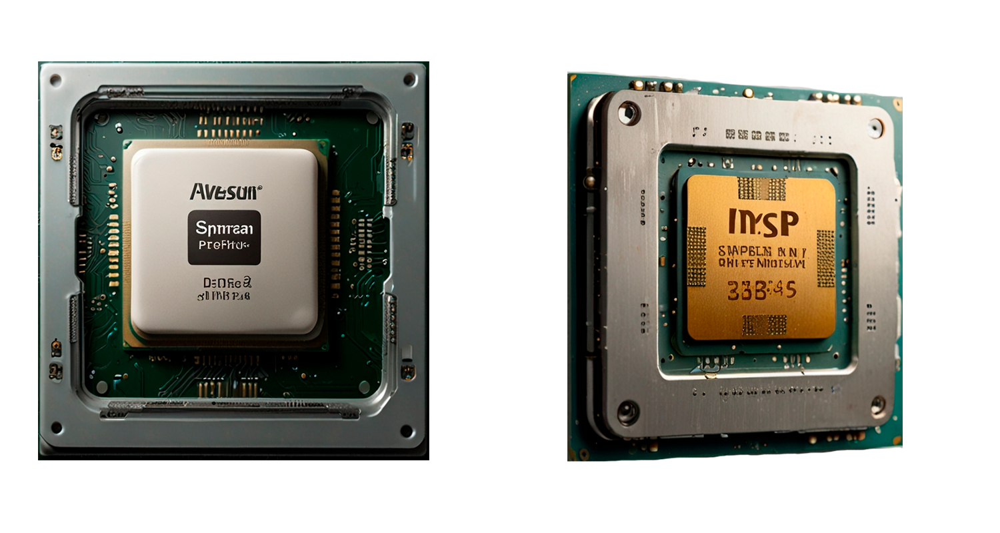

Что такое процессор?
Процессор, или центральный процессор (ЦП), является «мозгом» ноутбука, отвечающим за выполнение всех вычислительных задач. Он управляет работой операционной системы и всех программ, которые запускаются на устройстве. Чем мощнее процессор, тем быстрее ваш ноутбук сможет обрабатывать задачи и справляться с множеством процессов одновременно.
Основные характеристики процессора, на которые стоит обращать внимание при выборе ноутбука, включают:
- Тактовая частота — измеряется в гигагерцах (ГГц) и указывает на количество операций, которые процессор может выполнить за секунду. Чем выше частота, тем быстрее процессор.
- Количество ядер — современные процессоры имеют от двух до восьми ядер, что позволяет им одновременно выполнять больше задач. Чем больше ядер, тем лучше процессор справляется с многозадачностью.
- Потоки — потоки указывают на количество процессов, которые процессор может обрабатывать одновременно. Например, процессор с четырьмя ядрами и восемью потоками может выполнять восемь задач параллельно.
- Кэш-память — встроенная память процессора, которая позволяет ему быстро получать доступ к часто используемой информации, ускоряя работу системы.
- Энергопотребление — в ноутбуках важно, чтобы процессор был энергоэффективным, чтобы увеличить время автономной работы устройства.
Современные ноутбуки обычно оснащаются процессорами от компаний Intel и AMD. Линейки процессоров, такие как Intel Core или AMD Ryzen, предлагают различные уровни производительности, от базовых моделей для повседневных задач до мощных решений для профессиональной работы и игр.
